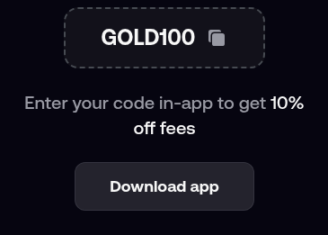

Quick answer: Enter GOLD100 as the FOMO referral code. It goes into the referral / invite code box in the FOMO app, while you create your account; referral codes are attached when the account is made. Write it as GOLD100, all capitals, no spaces. It is set up for 10% off trading fees (0.50% becomes 0.45%).
GOLD100
Checked November 2026.
FOMO is a social crypto trading app (fomo.family) where you can follow other traders and trade from your phone. When you sign up you can add a referral code on the registration form, and GOLD100 is ours.
With GOLD100 on the account you get 10% off FOMO trading fees, which takes the fee from 0.50% to 0.45% per trade.
The code is spelled G-O-L-D-1-0-0: four capital letters followed by the number one hundred (two zeros, not the letter O). A search for "FOMO promo code" points to the same code and the same field.
Use the referral / invite code box in the FOMO app. Leave it until last, but before you submit.

Plan on entering it during signup. FOMO attaches referral codes when the account is created, so adding one later is not something to count on.
Example: trade $5,000 in a month. At 0.50% you would pay $25.00 in fees; at 0.45% with GOLD100 you pay $22.50. That is $2.50 saved, and the saving grows with volume.
The discount is on fees, not on prices. It does not change what a coin is worth or whether a trade makes money.
FOMO is a phone-first app, so the code step happens inside the iOS or Android app. Copy GOLD100 before you open the app so you can paste it straight in.
Common mistakes:
GOLD100 is meant for people opening a new FOMO account. If you already have one, the code will not be added to it.
FOMO normally allows one account per person, so the code is a one-time step when you join.
FOMO can change or end its referral terms at any time. Its own site is the final word on what applies today.
GOLD100. Enter it in the referral code box while you create your account; referral codes are attached when the account is made.
No. GOLD100 lowers the fee you pay; it does not deposit anything into your account.
Type it in capitals, GOLD100, to be safe.
Not that we have seen. The published referral discount is 10%, so treat bigger claims with suspicion.
The referral discount is 10% off trading fees: 0.50% becomes 0.45%. On $1,000 traded that is $4.50 in fees instead of $5.00.
No. We are independent; check FOMO's current terms on its own site.
Crypto trading is risky. Prices can move sharply and you can lose money; only trade what you can afford to lose. This is general information, not financial advice.
Disclosure: GOLD100 is our referral code, so we may earn a commission when it is used. It costs you nothing extra.